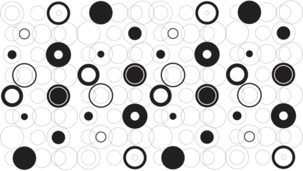
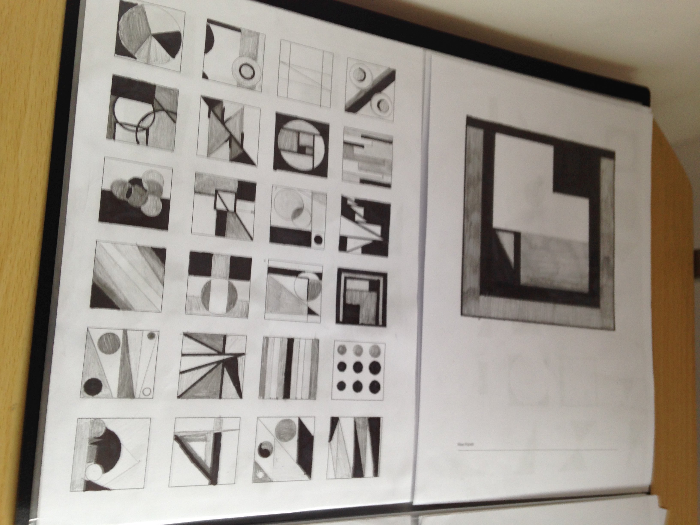
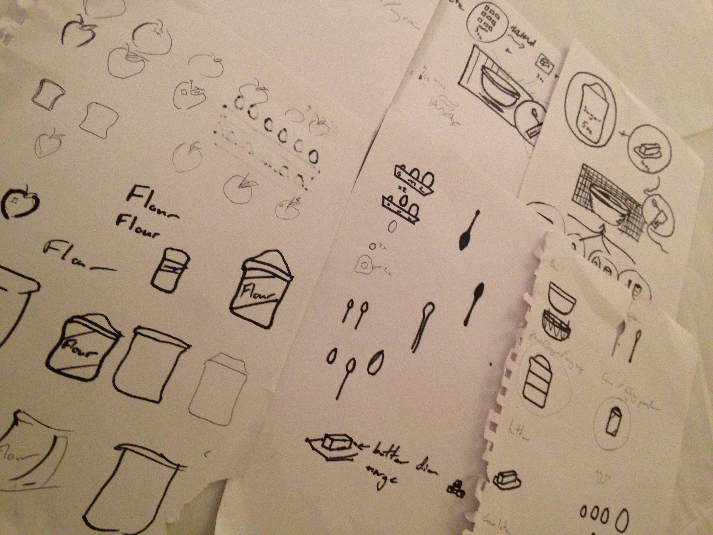

Hello World!
My name is Kevin Gallagher. I'm 19, Irish and studying Interaction Design at the University of Ulster Belfast. I have recently started a part time job in a bar where I work till 2 or 3 in the morning and I rarely know what day it is.. but yeah it's all great. I'm sort of an Nintendo nerd and do love alot of TV shows and movies, but mostly I'm a happy guy that loves my family, hanging out with friends, mountains of gorgeous food but also great design.
School

A little history. I went to school at Saint columb's College in Derry. It was here that I realised all I wanted to do was to work in the Art and Design feild. At the time i tried to picture myself as a painter or a fine art student but I could never really see it. It was just I had no idea what I really wanted to do and the whole thought of the "Big Bad World" with its endless possibliltys was slightly scary at least. So with a little research and guidence from teachers my first little step was to fix up my portfolio and apply for a foundation art degree.
Foundation


I started my fountation art degree year in Belfast. This was a huge year for learning and I loved (almost) every minute of it. I soon realised that the design route was for me and by the end of the year I knew I wamted to study IXD.
Uni
- 

- 
- 

This year I started my IXD degree. I'm really looking forward to learning more about design and becoming a better designer.